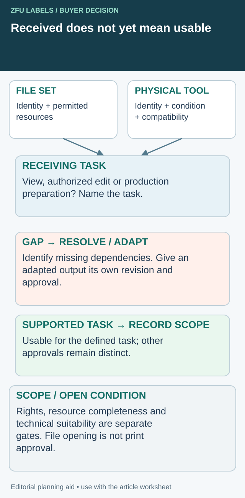

The invoice includes a tooling charge, so the buyer assumes the die and production files belong to the brand. Months later, another printer requests those assets and the answer is less clear. The charge may have covered setup, manufacture, access or ownership under terms nobody compared.
Clarify rights, access and technical portability before buying the tool or artwork service. A paid line on an invoice does not by itself describe what can be retrieved, reused or transferred. The practical goal is a usable asset register tied to the actual supplier agreement.

Accept the handover against a defined receiving task
Receiving an archive or a cutting tool is a checkpoint, not the end of continuity planning. Ask the receiving printer to report whether the permitted asset set supports the task actually agreed: viewing the approved output, making an authorized edit or preparing a compatible production route. Those tasks can require different information and rights.


| Deliverable | Receiving observation | Open decision if it fails |
|---|---|---|
| Approved output | Exact revision opens at the intended size | Resolve file identity before judging appearance |
| Editable source | Required links/resources resolve under the agreed workflow | Request a permitted dependency or agree a different deliverable |
| Font handling | Lawful available font or agreed output strategy | Do not copy restricted files simply to make the warning disappear |
| Physical tool | Identity, condition and relevant compatibility information reviewed | Receiving technical owner confirms adaptation or replacement need |
| Resulting output | New output compared with the authorized reference | Approve the changed scope before production |
Adobe's packaging guidance describes collecting resources and a report; its font packaging advice makes licensing a separate check. These are file-workflow references, not a legal determination of the buyer's tooling agreement.
Keep a corrected transfer distinguishable
Suppose a hypothetical editable crest file opens but a linked image is missing. Record the missing resource and the reference output used for comparison. Do not rebuild the image from a screenshot and then call the transfer unchanged. If an adaptation is agreed, give the resulting file its own identity and obtain the appropriate approval.
A physical die can likewise be received without being confirmed compatible with the backup process. Ask for the receiving printer's actual requirement and proposal rather than promise immediate production because the brand owns the item. Ownership, access, condition and suitability remain separate questions.
Make the acceptance record list received, usable for the defined task, pending and excluded items. Retain the sender's manifest and the recipient's response together. This supports a specific purchasing choice: continue with the permitted assets, resolve dependencies, or price a controlled recreation before an emergency order.
The additional receiving review costs time. Its benefit is learning the real preparation burden while a planned option still exists. It does not establish intellectual-property rights, compel transfer of confidential production methods or qualify the resulting labels merely because the files open.
List the assets separately
Artwork, production-ready files, color references, cutting dies, printing plates and embossing tools are different assets. They may have different creators, ownership terms and compatibility limits. Avoid one vague line called setup that conceals all of them.
Ask which files the brand provides and which the printer creates. A printer may add trapping, separations, finishing masks or other production information. Identify what deliverables the commercial arrangement includes without assuming that every internal production file must be transferred.
For physical tooling, record the tool type, identification and job it serves. A custom shape or foil design can involve several tools. If one is replaced after wear or an artwork change, preserve the distinction between the historical reference and the currently usable item.
Separate ownership from the ability to use the asset
An agreement might give the buyer ownership while the supplier stores the tool. Another might provide a right to use a supplier-owned tool for a particular job. Retrieval, copying, maintenance and disposal may require their own terms. Have the responsible commercial parties review the actual wording rather than infer a legal conclusion from an industry habit.
Technical portability is another question. A tool made for one machine or process may not fit another printer's equipment. Even when transfer is permitted, the receiving printer needs to confirm suitability. Ownership does not remove dimensions, mounting or production constraints.
The custom die-cut guide addresses the cut path. This article addresses the asset and access conditions that remain after the shape has been selected.
Build a tooling and file register
| Asset field | What to agree and retain |
|---|---|
| Asset identity | Tool/file type, unique reference and artwork revision |
| Included deliverable | Physical item, editable file, PDF, mask or reference sample |
| Rights and access | Owner, permitted use and transfer conditions |
| Storage | Holder, location and identification method |
| Compatibility | Known machine/process requirements and limits |
| Maintenance | Inspection, wear, repair and replacement responsibility |
| Retrieval | Request route, notice, costs and release conditions |
| End of use | Retention period and authorized disposal process |
Keep the signed offer or agreement attached to the register. The table is a purchasing aid, not a substitute for contract advice or a determination of intellectual-property rights.
Ask what happens at the next revision
A new label size may require a new cutting tool. A changed foil mask may make an existing decorative tool unsuitable. Ask the printer which assets remain usable and which must be remade, then tie the answer to the revised artwork.
Do not assume a repeat order should have no setup charge because a tool already exists. Setup labor, equipment configuration and tooling manufacture are separate possible cost items. Ask what each actual charge covers. Equally, do not pay a new-tool charge repeatedly without an explanation of the new asset or replacement need.
The foil and embossing guide helps keep finish masks, tooling and artwork revisions together. A beautiful retained bottle cannot identify which production file or die produced the approved effect.
Test portability before an urgent transfer
If continuity depends on another printer being able to run the job, review the available assets before a supply interruption. Ask the receiving printer to identify the files and tools it can use, the information it still needs and any new preparation work.
A hypothetical wine brand might own its crest artwork and embossing tool while discovering that the tool format does not suit the backup press. The correct response is to plan the compatible replacement or alternative, not assume that physical possession guarantees immediate production.
Document any approved adaptation. A recreated tool should have its own identity and approval record. Do not let two different tools circulate under one reference merely because they reproduce the same general motif.
Preserve the production knowledge that matters
Keep approved drawings, file revisions, physical references and relevant order records in the brand's controlled project folder. The artwork handoff guide shows how to identify the dependencies of a production file. That preparation can reduce repeated clarification without claiming ownership of confidential supplier methods.
Ask who can retrieve the records if the usual buyer or designer leaves. A folder held only in one employee's inbox creates a different continuity problem from a tool held at the printer. Both deserve an identified access route.
Close a tool's life with a record
When a design is retired, confirm whether the tool should be retained, returned or disposed of under the agreement. Record the authorization and affected revisions. If a stored tool has been damaged or lost, obtain the relevant facts and commercial response before promising that the next order can use it.
Resolve the specific label handoff
Include permitted deliverables, asset/revision IDs, receiving workflow and missing dependencies or compatibility information.
Prepare the label specification inquiry. The form opens an email draft for your review; attachments go through the listed email or WhatsApp route. Actual supply scope, pricing, samples and timing need project confirmation.
Related decisions: Label Artwork Handoff: Identify the Production File and Its Dependencies; Label Material Substitution: Approve the Change Before the Repeat Run; Conflicting Label Specifications: Reconcile the Drawing, Proof and Purchase Order